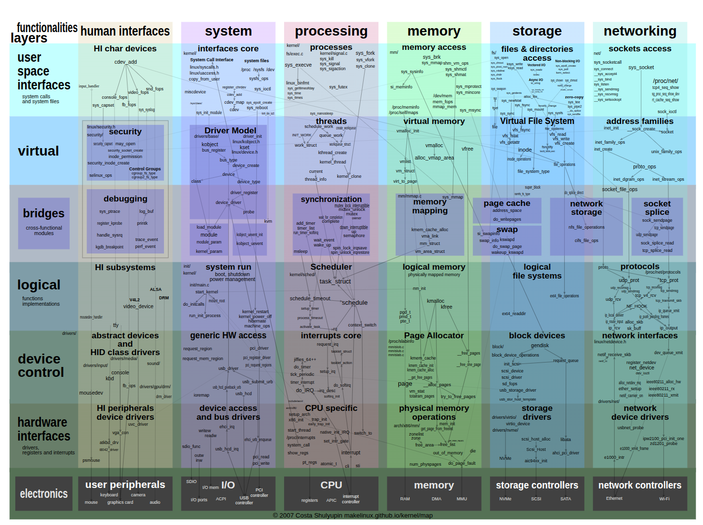
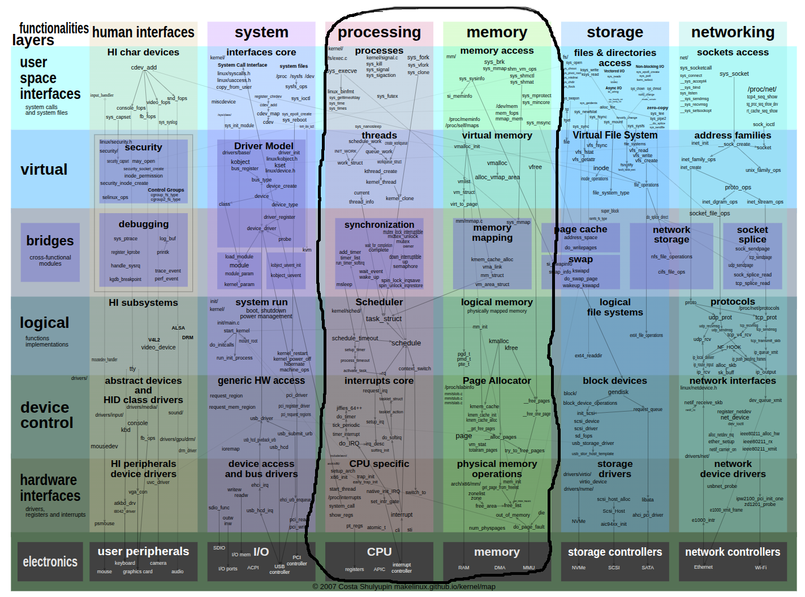
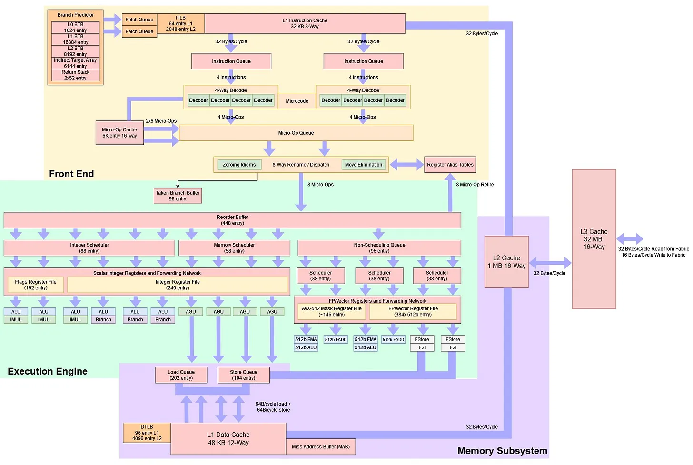

<!doctype html>
<html>
  <head>
    <meta charset="utf-8">
    <meta name="viewport" content="width=device-width, initial-scale=1.0, maximum-scale=1.0, user-scalable=no">

    <title>Performance Is Not a Number: Avoiding Microbenchmarking Pitfalls</title>

    <link rel="stylesheet" href="reveal.js/css/reveal.css">
    <link rel="stylesheet" href="reveal.js/css/theme/league.css" id="theme">
    <link rel="stylesheet" href="extensions/plugin/line-numbers/line-numbers.css">
    <link rel="stylesheet" href="extensions/css/highlight-styles/zenburn.css">
    <link rel="stylesheet" href="extensions/css/custom.css">

    <style>
      .reveal h1, .reveal h2, .reveal h3, .reveal h4, .reveal h5 { text-transform: none; }
    </style>

    <script>
      var link = document.createElement( 'link' );
      link.rel = 'stylesheet';
      link.type = 'text/css';
      link.href = window.location.search.match( /print-pdf/gi ) ? 'reveal.js/css/print/pdf.css' : 'reveal.js/css/print/paper.css';
      document.getElementsByTagName( 'head' )[0].appendChild( link );

      function set_address(self, remote, local) {
        if (window.location.search.match("local")) {
          self.href = local;
        } else {
          self.href = remote;
        }
      }
    </script>

    <meta name="apple-mobile-web-app-capable" content="yes">
    <meta name="apple-mobile-web-app-status-bar-style" content="black-translucent">
  </head>

  <body>
    <div class="reveal">
      <div class="slides">
          <script type="text/template">
          </script>
          </section>

          <section data-markdown=""
                   data-separator="^====+$"
                   data-separator-vertical="^----+$">
          <script type="text/template">
<!-- .element: data-background-image="images/title.png" data-background-size="100%" -->
<br />&nbsp;
<br />&nbsp;
<br />&nbsp;


----

#### Performance?
<!-- .element: style="text-align:left" -->

<table>
  <tr>
  <td>
  <pre>
(~) Frequency
 - Heat
   - Power Limits
   - Leakage
   - 'Dark Silicon'
 - 1 cycle (5Ghz): 0.20ns&nbsp;
  </pre>
  <pre>
(⬆️) Number of transistors
 - (⬆️) Cores
 - (⬆️) IPC
   - L1 cache:     0.50ns
   - L2 cache:     3.00ns
   - L3 cache:    10.00ns
   - Main memory: 70.00ns
   - Branch miss:  3.00ns
  </pre>
  </td>
  <td>
    
  </td>
</tr>
</table>

----

#### Always Measure!
<!-- .element: style="text-align:left" -->

```cpp
/----------------------------------------------------------\
|                                                          |
Measure → Profile → Analyze                                |  → Apply
                           \ Optimize (design, big0, ...) -/
                                                          /
                                    /---------------------
                           \ Microbenchmark               +
                                    |                     |
                            /- Measure →                  |
                            |  Profile →                  |
                            |  Analyze →                  |
                            |  Optimize →                 |
                            |  Test                       |
                            \-/  \------------------------/
```

##### claiming results without measuments
<!-- .element: style="text-align:left" -->
#### end-2-end, production like environment)
<!-- .element: style="text-align:left" -->
##### continuous integration
<!-- .element: style="text-align:left" -->

----

#### [linux-perf](https://perf.wiki.kernel.org)
<!-- .element: style="text-align:left" -->

```cpp
import prof; // https://github.com/qlibs/prof

int main() {
  prof::linux_perf profiler{"/dev/shm/perf"};

  profiler.start();
  // ...
  profiler.stop();
}
```
<!-- .element: style="text-align:left" -->

```sh
perf stat --control=fifo:/dev/shm/perf --delay=-1 ./app
```

<!-- .element: style="text-align:left" -->

----

#### [Top down Microarchitecture Analysis Method](https://rcs.uwaterloo.ca/~ali/cs854-f23/papers/topdown.pdf)
<!-- .element: style="text-align:left" -->

```sh
perf stat --topdown --td-level 1
  --control=fifo:/dev/shm/perf --delay=-1 ./app
```
<!-- .element: style="text-align:left" -->

```
Expected Range

  Category         Desktop Server    HPC
  ---------------- ------- ------ ------
  Retiring          20–50% 10–30% 30–70%
  Back-End Bound    20–40% 20–60% 20–40%
  Front-End Bound    5–10% 10–25%  5–10%
  Bad Speculation    5–10%  5–10%   1–5%

(source: Intel)
```

----

```cpp
import prof; // https://github.com/qlibs/prof

int main() {
  prof::callgrind profiler{"profile"};

  profiler.start(); // reset
  if (trigger()) {
    // ...
    profiler.stop();
    proflier.flush(); // dump
  }
}
```

```sh
valgrind --tool=callgrind --branch-sim=yes --instr-atstart=no ./app
```

----

#### [llvm-xray](https://llvm.org/docs/XRay.html)
<!-- .element: style="text-align:left" -->

```cpp
function():
  // nop word ptr [rax + rax + 512]    // -fxray-instrument
  lea eax, [rdi+rsi]
  ret
  // nop word ptr cs:[rax + rax + 512] // -fxray-instrument
```

```cpp
int main() {
  auto handler = [](int32_t func_id, XRayEntryType entry) {
    if (entry == XRayEntryType::ENTRY) {
      profiler.start();
    } else {
      profiler.stop();
    }
  };
  __xray_set_handler(+handler);
  __xray_patch(); // nop -> jmp &handler [code patching]
}
```

```sh
clang++ -fxray-instrument -fxray-function-list=function.txt
```

----

##### linux-perf - https://perf.wiki.kernel.org
<!-- .element: style="text-align:left; margin: 0 0;" -->
##### dtrace - https://perf.wiki.kernel.org
<!-- .element: style="text-align:left; margin: 0 0;" -->
##### intel-vtune - https://www.intel.com/content/www/us/en/docs/vtune-profiler
<!-- .element: style="text-align:left; margin: 0 0;" -->
##### amd-uprof - https://www.amd.com/en/developer/uprof.html
<!-- .element: style="text-align:left; margin: 0 0;" -->
##### toplev - https://github.com/andikleen/pmu-tools
<!-- .element: style="text-align:left; margin: 0 0;" -->
##### flamegraph - https://github.com/brendangregg/FlameGraph
<!-- .element: style="text-align:left; margin: 0 0;" -->
##### callgrind - https://valgrind.org/docs/manual/cl-manual.html
<!-- .element: style="text-align:left; margin: 0 0;" -->
##### coz - https://github.com/plasma-umass/coz
<!-- .element: style="text-align:left; margin: 0 0;" -->
##### gperftools - https://github.com/gperftools/gperftools
<!-- .element: style="text-align:left; margin: 0 0;" -->
##### likwid - https://github.com/RRZE-HPC/likwid
<!-- .element: style="text-align:left; margin: 0 0;" -->
##### tracy - https://github.com/wolfpld/tracy
<!-- .element: style="text-align:left; margin: 0 0;" -->
##### magic-trace - https://github.com/janestreet/magic-trace
<!-- .element: style="text-align:left; margin: 0 0;" -->
##### ...
<!-- .element: style="text-align:left; margin: 0 0;" -->
<!-- .element: style="text-align:left; margin: 0 0;" -->

----

#### hot-spot profiling (I/O, allocations, ...)
<!-- .element: style="text-align:left" -->

<p align="left">

</p>

<!-- .slide: data-background="black" -->

----

#### Modern processors execute nearly as many instructions per cycle as you can supply (I/O, branch, memory)
<!-- .element: style="text-align:left" -->
##### - Reduce overall instruction count / instruction per cycle (IPC)
<!-- .element: style="text-align:left" -->

<!-- .slide: data-background="black" -->

----

#### Microbenchmarking
<!-- .element: style="text-align:left" -->

```cpp
auto bench(auto fn) -> std::chrono::nanoseconds;
```

##### Faster iterations / Isolation / Understanding
<!-- .element: style="text-align:left" -->

----

#### Performance Is Not a Number!
<!-- .element: style="text-align:left" -->

```cpp
[[gnu::optimize("O3")]] auto fizz_buzz(int n) {
       if (n % 15 == 0) { return "FizzBuzz"; }
  else if (n % 3  == 0) { return "Fizz";     }
  else if (n % 5  == 0) { return "Buzz";     }
  return "Unknown";
}
```
```cpp
fizz_buzz                     100.00ns
```
<!-- .element: class="fragment" data-fragment-index="1" style="text-align:left" -->

```
fizz_buzz                       0.00ns
fizz_buzz                     100.00ns
fizz_buzz                     500.00ns
fizz_buzz(15)                  31.00ns
fizz_buzz(3)                   41.00ns
fizz_buzz(5)                   87.00ns
fizz_buzz(0)                  121.00ns
fizz_buzz(sequence{15,3,5})    33.00ns
fizz_buzz(sequence{3,15,5})    33.00ns
fizz_buzz(sequence{3,15,5})    33.00ns
fizz_buzz(sequence{5,3,5})     33.00ns
fizz_buzz(uniform{1,15})      137.00ns
...
```
<!-- .element: class="fragment" data-fragment-index="2" style="text-align:left" -->

----

### Performance Is Not a Number!
<!-- .element: style="text-align:left" -->

<table>
<tr>
  <td>
 <pre><code>
int main(int, const char**) {&nbsp;
  bench(fizz_buzz);
}
 </code></pre>
  </td>
  <td>
  
  </td>
  </tr>
</table>

###### `./fizz_buzz`

----

#### Performance Is Not a Number!
<!-- .element: style="text-align:left" -->



##### Linux 6.x - https://makelinux.github.io/kernel/map

----

### Performance Is Not a Number!
<!-- .element: style="text-align:left" -->

<table>
<tr>
  <td>
 <pre><code>
fizz_buzz(int):
  imul    eax, edi, -286331153
  mov     edx, OFFSET FLAT:.LC1&nbsp;
  add     eax, 143165576
  cmp     eax, 286331152
  ...
  jbe     .L13
  ...
  mov     rax, rdx
  ret
 </code></pre>
  </td>
  <td>
  
  </td>
  </tr>
</table>

###### `fizz_buzz(n);`

----

#### Performance Is Not a Number!
<!-- .element: style="text-align:left" -->


##### AMD Zen5 - https://chipsandcheese.com

----

### Avoiding Microbenchmarking Pitfalls

----

### Disclaimer
<!-- .element: style="text-align:left" -->

#### - Focused on [x86-64-linux-gnu](https://en.wikipedia.org/wiki/X86-64)
<!-- .element: style="text-align:left" -->

#### - Powered by https://github.com/qlibs/perf
<!-- .element: style="text-align:left" -->

----

#### Benchmarking
<!-- .element: style="text-align:left" -->

<!-- .element: style="text-align:left; margin: 0 0;" -->
#### - google-benchmark - https://github.com/google/benchmark
<!-- .element: style="text-align:left; margin: 0 0;" -->
#### - nanobench - https://github.com/martinus/nanobench
<!-- .element: style="text-align:left; margin: 0 0;" -->
#### - celero - https://github.com/DigitalInBlue/Celero
<!-- .element: style="text-align:left; margin: 0 0;" -->

---

#### - nanoBench - https://github.com/andreas-abel/nanoBench
<!-- .element: style="text-align:left; margin: 0 0;" -->
#### - uarch-bench - https://github.com/travisdowns/uarch-bench
<!-- .element: style="text-align:left; margin: 0 0;" -->
#### - llvm-exegesis - https://llvm.org/docs/CommandGuide/llvm-exegesis.html
<!-- .element: style="text-align:left; margin: 0 0;" -->

----

### [0] Not understanding why
<!-- .slide: data-background="black" -->

----

#### Profiling - dynamic collet
<!-- .element: style="text-align:left" -->

```cpp
static_assert(requires {
  profiler::is_syscall_free;
  profiler::is_mulitplexing_free;

  profiler.start();
  profiler.stop();

  { profiler[] } -> tuple;
  { profiler[ts...] } -> tuple;
});
```

----

#### Prevent Elision
<!-- .element: style="text-align:left" -->

```cpp
int main() {
  fizz_buzz(42);
  // xor eax, exa
  // ret
}
```

```cpp
int main() {
  perf::compiler::prevent_elision(fizz_buzz(42));
  // imul eax, edi, -286331153
  // ...
  // ret
}
```

```cpp
perf::verify(is_elided([] { }));
perf::verify(is_elided([] { int i{}; i++; }));
perf::verify(not is_elided([] { int i{}; prevent_elision(i++); }));
perf::verify(not is_elided([] { std::print("perf"); }));
```

----

#### Stat / Timing
<!-- .element: style="text-align:left" -->

```cpp
using perf::stat::tsc         // time-stamp-counter (rdtsc)
using perf::stat::real_time   // std::chrono::system_clock (wall-clock-time)
using perf::stat::steady_time // std::chrono::steady_clock (monotonic)
using perf::stat::cpu_time    // clock_gettime<CLOCK_PROCESS_CPUTIME_ID>
using perf::stat::tread_time  // clock_gettime<CLOCK_THREAD_CPUTIME_ID>
```

```cpp
perf::profiler p{perf::stat::tsc};

const auto invoke = [&](auto&& fn, auto&&... ts) {
  profiler.start();
  perf::compiler::prevent_elision(fn(ts...));
  profiler.stop();
};
```

```cpp
perf::log(invoke(fizz_buzz, 42)[]); // 8ns
perf::log(invoke(fizz_buzz, 1)[]);  // 2ns
```

----

#### Stat / Performance Measuring Counter (PMC)
<!-- .element: style="text-align:left" -->


```cpp
using perf::stat::cycles;
using perf::stat::instructions;
using perf::stat::branch_misses;
using perf::stat::branches;
using perf::stat::llc_misses;
using perf::stat::l1_misses;
using perf::stat::l1_dcache_loads;
using perf::stat::itlb_loads;
using perf::stat::itlb_load_misses;
...
```

```cpp
perf::profiler p{perf::stat::cycles, perf::stat::instructions};
static_assert(p::is_syscall_free);

//start(); // RDPMC - Read Performance Monitoring Counters (current thread)
perf::log(invoke(fizz_buzz, 42)[]); // 8ns
perf::log(invoke(fizz_buzz, 1)[]);  // 2ns
```

----

#### Record / Sampling
<!-- .element: style="text-align:left" -->

```cpp
// LBR - Last Branch Record
using perf::record::cycles;
using perf::record::instructions;
...
```

```cpp
// PEBS - Precise Event-Based Sampling / IBS (AMD)
using perf::record::mem_loads; // cycles 3
using perf::record::mem_stores;
```

```cpp
perf::profiler profiler{perf::record::mem_loads}
profiler.start();
profiler.stop();
```

----

#### Trace / Tracing
<!-- .element: style="text-align:left" -->

```cpp
// IPT - Intel Processor Trace - (Intel, Apple M4)
using perf::trace::instructions;
using perf::trace::cycles;
```

```cpp
profiler.start();
foo();
profiler.stop();
```

```cpp
log // hexdump
verify(5 == instructions);
verify(3 == instructinos);
```

----

### Difference between fast cpu and cpu which is easy to make fast and providing tools to do so (intel)
<!-- .element: style="text-align:left" -->
<!-- .slide: data-background="black" -->

----

#### Stat / Metrics
<!-- .element: style="text-align:left" -->

```cpp
auto ipc = instructions / cycles;
auto cpi = cycles / instructions;
auto l1_dcache_miss_rate = l1_dcache_load_misses / l1_dcache_loads;
auto cache_miss_rate = cache_misses / cache_references;
auto branch_miss_rate = branch_misses / branches;
auto llc_miss_rate = llc_misses / cache_references;
auto context_switch_rate = context_switches / cycles;
auto dtlb_miss_rate = dtlb_load_misses / dtlb_loads;
auto frontend_stall_rate = stalled_cycles_frontend / cycles;
...
```

```cpp
perf::log(profiler[ipc]);
perf::log(profiler[cpi]);
```

----

#### [Top down Microarchitecture Analysis Method](https://rcs.uwaterloo.ca/~ali/cs854-f23/papers/topdown.pdf)


----

#### [Top down Microarchitecture Analysis Method](https://rcs.uwaterloo.ca/~ali/cs854-f23/papers/topdown.pdf)

```cpp
auto retiring = retiring / slots;
auto heavy_operations = heavy_operations / slots;
auto light_operations = retiring - heavy_operations;

auto bad_speculation = bad_speculation / slots;
auto branch_mispredict = branch_mispredict / slots;
auto machine_clears = bad_speculation - branch_mispredict;

auto frontend_bound = frontend_bound / slots;
auto fetch_latency = fetch_latency / slots;
auto fetch_bandwidth = frontend_bound - fetch_latency;

auto backend_bound = backend_bound / slots;
auto memory_bound = memory_bound / slots;
auto core_bound = backend_bound - memory_bound;
```

```cpp
perf::log(profiler[topdown]);
perf::log(profiler[cpi]);
```

----

#### Profiler
<!-- .element: style="text-align:left" -->

```cpp
perf::profiler profiler{
  perf::stat::tsc, perf::stat:cycles, perf::stat::instructions, // RDPMC
  perf::trace::instructions, perf::trace::cycles,               // IPT
  perf::record::mem_loads, perf::record::mem_stores             // PEBS, LBR
};
```

```cpp
static_assert(profiler::is_syscall_free);
static_assert(profiler::is_mulitplexing_free);
```

```cpp
profiler.start();
profiler.stop();
```

-----

#### Analyzing - static analysis
<!-- .element: style="text-align:left" -->

```cpp
static_assert(requires {
  analyzer{events...}
  analyzer << instructions;
})
```

----

#### Analyzer - llvm-mca - https://llvm.org/docs/CommandGuide/llvm-mca.html
<!-- .element: style="text-align:left;" -->

```cpp
perf::mc::assembly;
perf::mc::encoding;
perf::mc::address;
perf::mc::uops;
perf::mc::latency;
...
```

```cpp
perf::mca::timeline;
perf::mca::resource_pressure;
perf::mca::bottleneck
```

```cpp
perf::debug::source;
```

#### osaca - https://github.com/RRZE-HPC/OSACA
<!-- .element: style="text-align:left; margin: 0 0;" -->
#### uica - https://uica.uops.info
<!-- .element: style="text-align:left; margin: 0 0;" -->


----

#### Analyzer
<!-- .element: style="text-align:left;" -->

```cpp
perf::analyzer analyzer{perf::mc::assembly};
analyzer << profiler[trace::instructions];
```

```cpp
perf::log(analyzer[perf::mca::timeline]);
perf::log(analyzer[perf::mca::resource_pressure]);
```

----

#### disassemble vs trace vs sample
<!-- .element: style="text-align:left" -->

```cpp
if (foo) [[likely]] // taken (that's why you can use likely)
[[gnu::always_inline]] inline void fast_path() { std::puts("fast_path"); }
[[gnu::cold]] void slow_path() { std::puts("slow_path"); }
```

```cpp
constexpr jmp::static_branch<bool> disarmed = false;

void trigger() {
  if (not disarmed) { // { false: nop, true: jmp }
    fast_path();
  } else {
    slow_path();
  }
}
```

```cpp
trigger(): // $CXX -O3
  nop                              # code patching (nop->jmp .Ltmp1)
 .Ltmp0:                           # fast path (inlined)
  mov edi, OFFSET FLAT:.LC1
  jmp puts
 .Ltmp1:                           # slow path (cold)
  jmp slow_path() # [clone .cold]
```

##### [first-time] backwards = taken
<!-- .element: style="text-align:left;" -->

----

```cpp
  disasm      trace    sample
1   mov
2
3
4
5
6
```

#### https://github.com/qlibs/jmp
<!-- .element: style="text-align:left" -->

----

#### analyze vs profile
<!-- .element: style="text-align:left" -->

```cpp
fizz_buzz(unpredictable)/latency:
      trace.instructions record::mem_loads timeline timeline resource_pressure
1     1                                      1
2     2                                      1           1
3                                                        1
3
4     10                                     1
4     11
5                                            1
5     12
```

----

#### trace & analyze
<!-- .element: style="text-align:left" -->
```cpp
perf::profiler profiler{perf::trace::instructions, perf::trace::cycles}
const auto invoke = [&](auto&& fn, auto&&... ts) {
  profiler.start();
  perf::compiler::prevent_elision(fn(ts...));
  profiler.stop();
};
invoke(fizz_buzz, std::rand());
```

#### show ipc per instruction
<!-- .element: style="text-align:left" -->

----

#### Tune
<!-- .element: style="text-align:left" -->

```cpp
import perf;

int main() {
  perf::cpu::set(
    {freq_scaling, performance},
    {turbo_mode, false},
    {hypethreading, false}
  );
  perf::thread::set(thread::self, // 0, 1: used by kernel
    {priority, max},
    {affinity, 2},
    {numa_node, 1}
  );

  perf::sys::enable_huge_pages();
  perf::memory::cache::disable();
  perf::memory::pre_fault();
  perf::memory::pollute_heap();
  perf::cache::flush(addr);           // clflush
```

```cpp
  perf::cpu::branch::set(ip) = true; // NOT AVAIL!
  perf::cpu::port(ADL1.) = true;    // NOT AVAIL!
  // ...
```

```cpp
}
```

----

### Latency vs. Throughput

----

#### Latency - Time it takes for a single operation to complete (ns/op)
<!-- .element: style="text-align:left" -->

```cpp
align(alignment) for (auto i = 0u; i < N; ++i) {
  checksum ^= fn(checksum ^ ts...);       // data dependency
  std::atomic_thread_fence(memory_order); // [optional]
}
```

```
align(alignment) for (auto i = 0u; i < N; ++i) {
  perf::unroll(2x) - perf::unroll(1x);
}
```

----

#### Latency / CPU -> FPGA -> Application-Specific Integrated Circuit (ASIC)
<!-- .element: style="text-align:left" -->


##### network-request
<!-- .element: style="text-align:left" -->

----

#### Throughput - Total number of operations or tasks completed in a given amount of time (op/s)
<!-- .element: style="text-align:left" -->

```cpp
align(Alignment) for (auto i = 0u; i < N; ++i) {
  prevent_elision(fn(ts...));
}
```

```cpp
perf::bench::throughput::policy::seq;
perf::bench::throughput::policy::unseq;
perf::bench::throughput::policy::unroll;
perf::bench::throughput::policy::par;
perf::bench::throughput::policy::omp;
perf::bench::throughput::policy::cuda;
```
<!-- .element: class="fragment" data-fragment-index="1" style="text-align:left" -->

----

#### Throughput / CPU -> GPU/TPU


##### https://docs.nvidia.com/cuda/cuda-c-programming-guide / back-testing
<!-- .element: style="text-align:left" -->

----

```cpp
perf::runner bench{perf::bench::latency{}};

bench(fizz_buzz, 3);
bench(fizz_buzz, 5);
bench(fizz_buzz, 15);

report

```


----

Data distrubtion (branch prediction)

```cpp
using perf::data::unpredictable;  // not elided and not predicted
```

```cpp
{1, 3, 5}
```

```cpp
bench(to_string, perf::data::unpredictable);
// random
for (auto i = 0; i < 10; ++i) {
  bench(to_string, perf::data::unpredictable);
}
```

branch prediction state (10'000 1/0 branches learn)

----

### Warm/Cold/Alignment

```cpp
```

```cpp
int main() {
  auto aligned_fn    = [] [[gnu::aligned(64)]] { };
  auto aligned_loop  = [] {
    perf::code::align(64) for (;;) { // clang::code_align(64)
      // ...
    }
  };
```

----


----

### [2.1] Not benchmarking the right thing
<!-- .element: style="text-align:left" -->
### [2.2] Not benchmarking realistic scenarios (alignment, cold, warm, threading, ...)
<!-- .element: style="text-align:left" -->
<!-- .slide: data-background="black" -->

----

#### Reporting
<!-- .element: style="text-align:left" -->

- Timing data is usually skewed, not symmetric
- taking mean!
      - use min, median, percentials instead
- statistical / scientifi approach
- baseline (speedup, relative)
      - mesuremnets are not following normal distrubution

----

```cpp
perf::metric::stat::min;
perf::metric::stat::max;
perf::metric::stat::mean;
perf::metric::stat::geomean;
perf::metric::stat::median;
perf::metric::stat::percentile;
perf::metric::stat::p99;
perf::metric::stat::p75;
perf::metric::stat::p50;
perf::metric::stat::p25;
perf::metric::stat::variance;
perf::metric::stat::stddev;      // degrees_of_freedom = 1
perf::metric::stat::sem;         // standard error
perf::metric::stat::mae;         // median absolute errror
perf::metric::stat::mad;         // median absolute deviation
perf::metric::stat::cv;          // coefficient of variation
perf::metric::stat::z_score;
perf::metric::stat::t_score;
```

----

```cpp
perf::runner bench{perf::bench::latency{}};
bench(fizz_buzz, perf::data::unpredictable<int>);
report(bench[stat::tsc], min, median, p90, p99)
```

```cp
```

----

#### Plotting
<!-- .element: style="text-align:left" -->

#### - jupyter notebook - https://jupyter.org
<!-- .element: style="text-align:left" -->
#### - benchmark GUI - https://github.com/skarupke/benchmark-gui
<!-- .element: style="text-align:left" -->
#### - gnuplot/terminal - https://github.com/qlibs/perf
<!-- .element: style="text-align:left" -->

----

```cpp
perf::plot::hist;
perf::plot::bar; // show error bars (show where the previous one could be slower)
perf::plot::box;
perf::plot::ecdf;
perf::plot::flamegraph;
```

```cpp
PERF_IO_PLOT_TERM='sixel'                 # terminal
PERF_IO_PLOT_TERM='dumb size 80,25'       # terminal asci
PERF_IO_PLOT_TERM='dumb size 150,25 ansi' # terminal ansi
PERF_IO_PLOT_TERM='wxt'                   # popup windows
PERF_IO_PLOT_TERM='canvas'                # html
PERF_IO_PLOT_TERM='png'                   # png
```

#### https://arewesixelyet.com
<!-- .element: style="text-align:left" -->

----

#### Histogram
<!-- .element: style="text-align:left" -->

----

#### [Empirical distribution function](https://en.wikipedia.org/wiki/Empirical_distribution_function)
<!-- .element: style="text-align:left" -->

----

#### Bar
<!-- .element: style="text-align:left" -->

----

- gnuplot charts (sixel) and (console)
- running on the server side - sixel / show console picture

----

```cpp
perf::plot::complexity (big0)
```

----

### Flamegraph
<!-- .element: style="text-align:left" -->

```cpp
perf::plot::flamegraph(bench[perf::record::cycles]);
```


----

#### Assuming measurements are independent
<!-- .element: style="text-align:left" -->
#### Assuming measurements are following normal distribution
<!-- .element: style="text-align:left" -->
#### Not using ratios, baseline (speedup, relative)
<!-- .element: style="text-align:left" -->
<!-- .slide: data-background="black" -->

----

### [3] Not verifying/testing results
<!-- .slide: data-background="black" -->

----

#### Verifying/Debugging
<!-- .element: style="text-align:left" -->

```cpp
auto sort = []<bool debug>(std::vector<int>& v) {
  std::ranges::sort(v);
  if constexpr (debug) {
    perf::verify(is_sorted(v));
  }
};
```

```cpp
bench(sort);
```
----

#### Testing
<!-- .element: style="text-align:left" -->

```cpp
perf::verify(instructions.size)
perf::verify(asm.instruciont == "mov")
perf::verify(asm.instruciton.count < non optimizaed)
perf::verify(as.minstruciton.count == c++optimization)
```

----

#### Self-testing/tuning
<!-- .element: style="text-align:left" -->

```
int main() {
  setup();
  perf::self::test({.verbose = true});
  // shows cycles of add, sub,
  // shows graph of rdtsc
}
```

```cpp
auto add  = [](int a, int b) { return a + b; };
auto sub  = [](int a, int b) { return a - b; };
auto mult = [](int a, int b) { return a * b; };
auto div  = [](int a, int b) { return a / b; };
```

stat vs mca::stat
log
| mca.cycles | cycles   |
| 1          | 3 cycles |


----

### fizz_buzz
<!-- .element: style="text-align:left" -->

```cpp
import perf;

int main() {
  perf::log(perf::info::spec{
    {"perf",  perf::info::version()},
    {"time",  std::chrono::system_clock::now()},
    {"sys",   perf::info::sys::triple()},
    {"cxx",   perf::info::compiler()},
    {"cpu",   perf::info::cpu()},
    {"cache", perf::info::memory::cache()},
    // ...
  });


  auto optimize      = [] [[gnu::optimize("O3,fast-math")]] { }; // gcc
  auto target        = [] [[gnu::target("avx2")]] { };
  auto aligned_fn    = [] [[gnu::aligned(64)]] { };
  auto aligned_loop  = [] {
    perf::code::align(64) for (;;) { // clang::code_align(64)
      // ...
    }
  };

  // ...
```

----

```sh
name  info
----- -----------------------------------------------------------------
perf  0.0.1
time  2025-09-15 11:30:00
sys   x86_64-pc-linux-gnu
cxx   gcc-15.0.0
cpu   12th Gen Intel(R) Core(TM) i7-12650 (alderlake:6.154.3) / 2.67Ghz
cache iL1: 32Kb (64b), dL1: 48Kb/12 (64b)
...
```

----

#### Document export & share results
<!-- .element: style="text-align:left" -->

- show stiesd link
- jupyter notbeeok is good
- learning
- test it perf::verify(assembly)
- continous integration
- jupyter notebook approach

#### Eport/Share (jupyter)
<!-- .element: style="text-align:left" -->
- perf::json
- code says only what works and not what doesn't
- what didn't what work
- share studies!
  - github

### [https://github.com/qlibs/perf#studies](https://github.com/qlibs/perf/discussions/4)

----

### [3] Not having reproducible results
<!-- .slide: data-background="black" -->

----

#### Linux / Kernel Mode Task-Isolation - https://lwn.net/Articles/816298
<!-- .element: style="text-align:left" -->

```sh
isolcpus=<cpu number>,...,<cpu number> # bootloader
```
<!-- .element: style="text-align:left" -->


```
cat /sys/devices/system/cpu/isolated # <cpu number>,...,<cpu number>
```

----

#### [Unified Extensible Firmware Interface](https://en.wikipedia.org/wiki/UEFI) (UEFI)
<!-- .element: style="text-align:left" -->

```cpp
int efi_main(void*, perf::uefi::sys* sys) { // no kernel
  perf::runner bench(perf::bench::latency{
    .setup    = [] { perf::cpu::cache::disable(); },
    .teardown = [] { perf::cpu::cache::enable(); },
  });

  auto div = [] [[gnu::optimize("O3")]] (int a, int b) {
    return a / b;
  };

  bench(div, unpredictable<int>, unpredictable<int>);

  perf::report(
    sys->stdout,
    bench[perf::stat::tsc, perf::stat::cycles], // rdtsc, rdpmc
    min, median, p90, p99
  );
}
```
```cpp
$CXX -DPERF_UEFI \
  -target x86_64 -ffreestanding -fno-exceptions -fno-rtti \
  ...
```

----

### Further reading
<!-- .element: style="text-align:left" -->

##### Intel - https://www.intel.com/content/www/us/en/developer/articles/technical/intel-sdm.html
<!-- .element: style="text-align:left; margin: 0 0;" -->
##### AMD - https://www.amd.com/content/dam/amd/en/documents
<!-- .element: style="text-align:left; margin: 0 0;" -->
##### ARM - https://developer.arm.com/documentation/ddi0487/latest
<!-- .element: style="text-align:left; margin: 0 0;" -->
##### Apple - https://developer.apple.com/documentation/apple-silicon/cpu-optimization-guide
<!-- .element: style="text-align:left; margin: 0 0;" -->

---

##### [https://github.com/qlibs/perf#resources](https://github.com/qlibs/perf?tab=readme-ov-file#User-Guide)
<!-- .element: style="text-align:left; " -->

          </script>
        </section>

      </div>
    </div>

    <script src="reveal.js/lib/js/head.min.js"></script>
    <script src="reveal.js/js/reveal.js"></script>

    <script>

      // Full list of configuration options available at:
      // https://github.com/hakimel/reveal.js#configuration
      Reveal.initialize({

        // Display controls in the bottom right corner
        controls: false,

        // Display a presentation progress bar
        progress: false,

        // Display the page number of the current slide
        slideNumber: 'c/t',

        // Push each slide change to the browser history
        history: true,

        // Enable keyboard shortcuts for navigation
        keyboard: true,

        // Enable the slide overview mode
        overview: false,

        // Vertical centering of slides
        center: true,

        // Enables touch navigation on devices with touch input
        touch: true,

        // Loop the presentation
        loop: false,

        // Change the presentation direction to be RTL
        rtl: false,

        // Turns fragments on and off globally
        fragments: true,

        // Flags if the presentation is running in an embedded mode,
        // i.e. contained within a limited portion of the screen
        embedded: false,

        // Flags if we should show a help overlay when the questionmark
        // key is pressed
        help: true,

        // Flags if speaker notes should be visible to all viewers
        showNotes: false,

        // Number of milliseconds between automatically proceeding to the
        // next slide, disabled when set to 0, this value can be overwritten
        // by using a data-autoslide attribute on your slides
        autoSlide: 0,

        // Stop auto-sliding after user input
        autoSlideStoppable: true,

        // Enable slide navigation via mouse wheel
        mouseWheel: false,

        // Hides the address bar on mobile devices
        hideAddressBar: true,

        // Opens links in an iframe preview overlay
        previewLinks: false,

        // Transition style
        transition: 'none', // none/fade/slide/convex/concave/zoom

        // Transition speed
        transitionSpeed: 'default', // default/fast/slow

        // Transition style for full page slide backgrounds
        backgroundTransition: 'none', // none/fade/slide/convex/concave/zoom

        // Number of slides away from the current that are visible
        viewDistance: 1,

        // Parallax background image
        parallaxBackgroundImage: '', // e.g. "'https://s3.amazonaws.com/hakim-static/reveal-js/reveal-parallax-1.jpg'"

        // Parallax background size
        parallaxBackgroundSize: '', // CSS syntax, e.g. "2100px 900px"

        // Number of pixels to move the parallax background per slide
        // - Calculated automatically unless specified
        // - Set to 0 to disable movement along an axis
        parallaxBackgroundHorizontal: null,
        parallaxBackgroundVertical: null,

        // Optional reveal.js plugins
        dependencies: [
          { src: 'reveal.js/lib/js/classList.js', condition: function() { return !document.body.classList; } },
          { src: 'reveal.js/plugin/markdown/marked.js', condition: function() { return !!document.querySelector( '[data-markdown]' ); } },
          { src: 'reveal.js/plugin/markdown/markdown.js', condition: function() { return !!document.querySelector( '[data-markdown]' ); } },
          { src: 'reveal.js/plugin/highlight/highlight.js', async: true, callback: function() { hljs.initHighlightingOnLoad(); } },
          { src: 'reveal.js/plugin/zoom-js/zoom.js', async: true },
          { src: 'reveal.js/plugin/notes/notes.js', async: true },
          { src: 'extensions/plugin/line-numbers/line-numbers.js' }
        ]
      });

      function handleClick(e) {
        if (1 >= outerHeight - innerHeight) {
          document.querySelector( '.reveal' ).style.cursor = 'none';
        } else {
          document.querySelector( '.reveal' ).style.cursor = '';
        }

        e.preventDefault();
        if(e.button === 0) Reveal.next();
        if(e.button === 2) Reveal.prev();
      }
    </script>

  </body>
</html>
